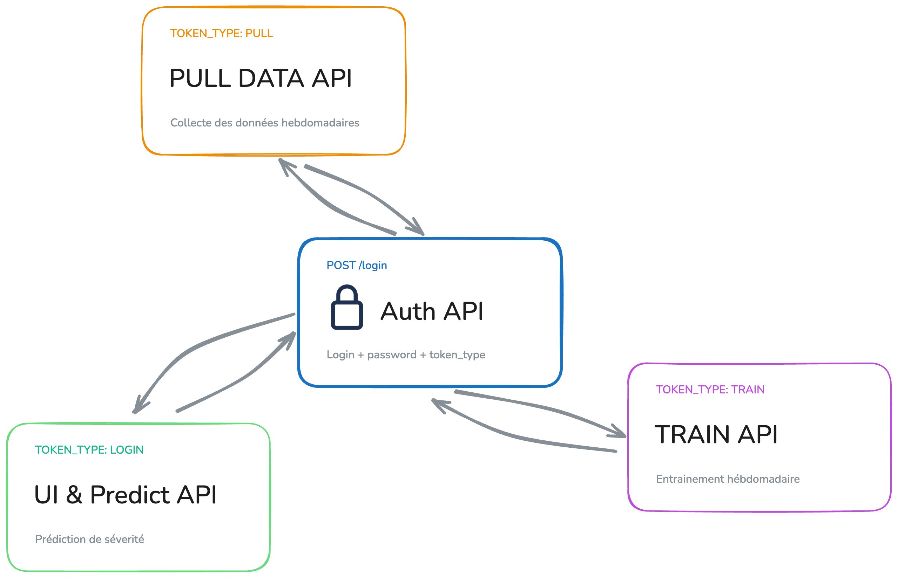

02 / 08Sécurité
Un jeton distinct pour chaque responsabilité
L'Auth API authentifie l'utilisateur puis délivre un JWT limité à l'opération demandée.
3 secrets de signature distinctsLogin, pull et train.
Expiration à 60 minutesPour limiter la durée d'exposition.
Listes d'utilisateurs autorisésPour les rôles pull et train.
Bearer tokenPrésenté uniquement à l'API concernée.

Chaque service vérifie l'identité avant de laisser circuler une donnée ou une prédiction.